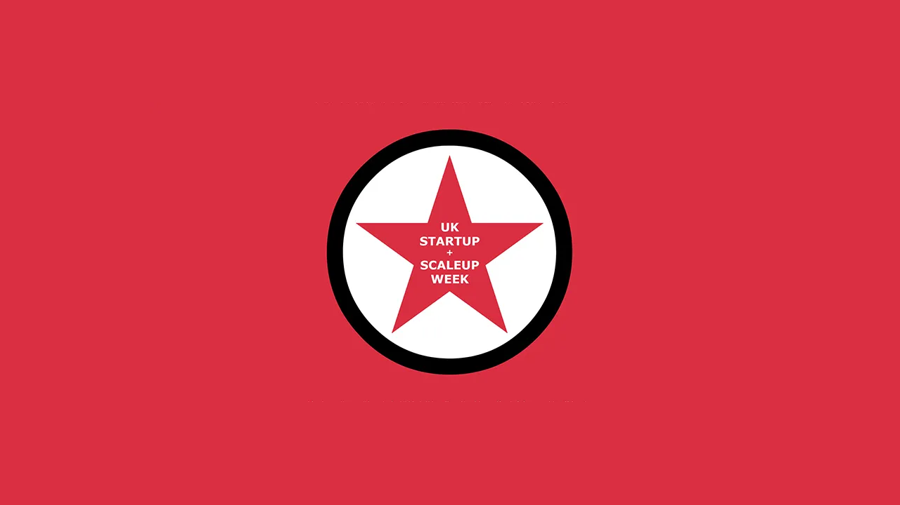

UK Startup & Scaleup Week 2025
Day One - Inspiration
Intro & Welcome - Paul Lancaster
Paul Lancaster opened UK Startup and Scaleup week with Day One held at The Fire Station which is a vibrant and mid-scale performance venue in Sunderland. Paul mentioned that everyone there speaking has inspire Paul and he has curated everything including the music and the day is about inspiring and motivating anyone starting or growing a business.
Paul thanked those who are helping to support the event including Xero, Sunderland City Council, NatWest, North East BIC, Bear Tech, BJSS / CGI, FSB, Northstar Ventures, Sweeney Millar Law, Tennick Accountants, Umi, Ward Hadaway, Waterstons and Wubbleyou along with Chris and Issy from Howell Media who were filming and for the amazing opening video showcasing Sunderland and those who live there including Paul himself who moved to Sunderland.
Enterprising Sunderland - Paul McEldon OBE, Paul Callaghan CBE, Sharon Appleby, David Pattison, Rita Collins, David Martin & Chaired by Alfie Joey
Alfie Joey (Communicator of the Year, TEDx Speaker & BBC presenter) is co-host of UK Startup and Scaleup week in this venue and hosted a panel on Enterprising Sunderland including Paul McEldon OBE (CEO, North East BIC), Paul Callaghan CBE (Chairman, The Leighton Group & Chair, Sunderland Music, Arts & Culture Trust), Sharon Appleby (CEO, Sunderland BID), David Pattison (Business Investment Manager, Sunderland City Council), Rita Collins (Regional Director for Yorkshire & North East Corporate Banking, NatWest), David Martin (CEO, Esports Global & Senior Vice President, British Esports) with many of them flying the flag and spotlighting people.
Paul Callaghan was interviewed so many times by Joey but this place is so personal for him and is great to have everyone there, the vision back was back in 2012 when he thought the city was pretty low ebb and had been speaking to the president of the student's union and asked them what they thought of Sunderland which was the university was okay but there's not much else to do so from there started the idea of the culture quarter. The fire station was built and opened in 1908 and closed in 1992 and stood empty for twenty five years but wanted an auditorium and where it is was a bomb site from World War II and the biggest raid of the war, his grandfather saw the explosion from here who thought the Empire theatre and Fire Station were gone but they survived but this place was a warehouse that was bombed.
David Martin had just been to Kuwait and is off to Seoul in a few days but is involved in e-sports which is an elite sport. E-sports, video games 3.5 billion people play them, and half a billion people participate in them or watch them. The problem brands have is engaging this young audience, but e-sports and gaming is the way to reach out to them and will be bringing up a fund to Sunderland. They give their time to make Sunderland the UK and global capital of e-sports where they have a suite of houses where people are educated and businesses will start and grow, and these people are elite athletes to train to play, and they start at 13 and there will be an Olympic Games for e-sports in two years. Also think about health wellness and nutrition and they want to bring in visitors and businesses from all over the world and make their home here. Sunderland is an incredible city with passionate people to bring in new jobs, businesses and tourism. They are trying to build an e-sports arena which will be a multi-purpose venue and will be starting work on this in the summer and are almost ready to go and are putting a lot on the line. It will be the only one in the UK and globally that can pull together business, entertainment and tournament side to performance and wellbeing. What they are building which includes studios as well as the e-sports facilities and are building this for the kids and make sure we are ready and get them involved and the future will be okay.
Rita Collins is regional director at NatWest and are involved in the event. Rita is super passionate about the North since they have been here since 2012, these events are important as it is those people who found and start an idea, or they see something being done and realise they can do something in a different way - all these organisations started somewhere and they want to be here to see what support they can provide although may not be the right funders they can be that connector and provide other support to start your business and help with challenges. What Rita has seen and encouraged them is, they started their career twenty years ago in London and moved up here and thought their career was over as was complete naivete but saw how things were and how they are now with the mayor Kim McGuiness and have seen companies come up from London and come to the North East. They are super passionate about the people here and businesses.
David Pattison from Sunderland City Council said there hasn't been a more exciting time for the area, just walking into the city today and seeing how things are progressing has been fantastic. The scale of what is going on is about thirty / forty years of investment happening in ten years and lots of things are thriving and there is more opportunity in Sunderland than ever before and are creating accommodation to bring businesses in the city and support businesses in Sunderland to have a home. This not only involves indigenous businesses but others coming into the city, and it is the most exciting time in the city in their lifetime. Have got the best package for supporting businesses in Sunderland there is UK shared prosperity funding and have created a package for businesses of all shapes and sizes and would encourage people to speak to them with something for everyone, funding is time limited and is extended for this financial year but from March next year don't really know what is going to happen going forward. Having a mayor and different frame of leadership has helped with business support through the combined authority so are working closely and need to ensure what is put in place is fit for purpose and works so businesses get what they need to grow and thrive.
Sharon is always championing businesses and the key thing they see is the collaboration between businesses on a number of different things and when starting and scaling up there's a level of support that is definitely not available everywhere. There has been a change of leadership in the last ten years as the city centre didn't have much investment for thirty years, but changes have made a difference, and people are able to come in and do something fantastic. Landlords are prepared to take a risk and there's a lot of help where Mackie's Corner has now been filled with businesses and 150 units have been created for businesses, agents are more engaged than before in what the future looks and are part of the conversation and are looking at what part people are going to play, people were doing their own thing but now are working together. Have to set things up for the future not just for now and need to make it relevant today and in the future and for those coming and what their expectations will be. What would help people is being in-touch and helping and supporting each other and take advantage of events, go to the relevant things and talk to the right people, so actually engage if you are starting up or scaling up here.
Paul McEldon provides support for networking with the North East BIC and they have never felt such a buzz at the moment than ever before. They witnessed the passion and pride in London when Sunderland played there in Trafalgar Square, if you have the pride, passion, people and plan then that is great to see. They see the plan, vision and ambition is tangible and the people looking for startup advice are talking about Music City and Crown Works even if they aren't involved. They have had production companies who want to be at Crown Works, they have had someone relocate near there who does Clapper Boards for productions all over the world. They heard someone who had come back to Sunderland who wanted to teach people to sing and were able to connect them with Music City and someone who won UK agents of the year and wouldn't have been able to do this there three years ago. Sunderland is going somewhere, and Sunderland is top of the league for businesses since Covid and North East BIC has set up over a hundred businesses in the city and there is a lot going on in Sunderland.
Paul Callaghan talked about the idea of Music City which dates back to 2015 which help set off bidding for UK City of Culture and were laughed at but they put together a great team and showed what they were going to do and got to the last two and it was like switching a switch and people were more confident and were against Coventry and were doing the final pitch but the decision was made but they lost but had a huge party but decided to do something about it. They realised there is a huge music scene so decided to put together a bid to become a world music city before covid but afterwards put together a bid and a team and pitched to the world music cities network in Berlin and they decided they would announce a strategy this year even when they didn't know they got it, and when they did they kept it quiet and brought the managing director from Berlin and would be able to announce they joined Sydney, Berlin, Edinburgh and Manchester to join organisations about music being an exciting part of the city and will be having a year of music in Sunderland between world music day this year and next year. There will be a whole series of things happening including grass roots and people wanting to start their career and all of the business that goes behind it to make Sunderland a real creative city, to make Sunderland a place where talent wants to live. Have gone through three stages people use to look backwards to being the best shipbuilding town in the world, then changed things to turn hope into belief and when that happens you get ambition, and this place today is packed with people full of ambition.
One piece of inspiration or seed of hope that was a turning point is from David Pattison is to get in touch, knows it is tough but there is a package of support and want as many businesses to tap into this as possible and want this support to go to the business community, they don't want to underspend. Paul Callaghan talked about opening up the North East BIC and thirty years later have a really successful business but they had knockbacks but if you believe in yourself and business you will succeed. Rita talked about whatever you do you'll have some kind of challenge but the reality is businesses in the region are resilient and there is a whole community of support and networking, why do we fall over so we can pick ourselves up again - there is a lot of talent and perseverance, but NatWest are here to support the community. Paul McEldon is support with events like Growth Lab where people have shared their invaluable experiences and there's a whole lot of support in Sunderland and across the whole North East and venues have needed to change due to needing more people to fit in.
Football + Business - David Bruce (Chief Business Officer, Sunderland AFC) & Lee Rorison (Founder & CEO, Serios Group)
Serios works with Sunderland football club for over three years, they typically work with big corporate enterprises, but football clubs are much like these. Serios is based out of Newcastle but have a good relationship with Sunderland AFC which is now a premier league club. David has worked in MLS in the United States where they were the chief marketing officer and left to come to Sunderland. It has been a great period and opportunity for the city and what happened last week at Wembley with the opportunity of the glare of the world where everyone will benefit. They have worked most of their career in the United States, but here they wanted to be like Ted Lasso, the American way is driven by service and lots of businesses live and die on great service, and they have brought to Sunderland that things aren't just red and white but are grey.
Sunderland has changed a lot, and things are looking more positive. Their vision for coming back to Sunderland and one of the things that struck them was the idea of being fancentric and putting the fan at the centre of everything, you can open the doors and just let people in so need to orient a football club to put the fans at the centre. You can't get anywhere without brilliant people, need to have vision and direction of travel, their core is working with big brands to distil an idea at the core of a business and let them live or die on this idea. How do you distil the purpose of who you are and for Sunderland AFC is being about the fans, the story or being a fan and following the club is at the heart of the city of Sunderland and have a fanbase who are utterly obsessed and most of the time supporting them has made them miserable. How do you figure out the vision so need to serve those who are relentlessly obsessed with the club and to make sure that everyone understands what they are doing to serve this purpose, you need to work really hard to super serve the fans and understand what makes it special.
Innovating through data and insight with the partnership between Serios group and Sunderland AFC to drive the club's ambitions forward. You can provide people with the right data to help them go forwards. Serios worked with the club and was easy to buy into this and have a platform to bring together the data points for football including Opta but there's also a whole range of different sources of data to help them day in and day out along with CRM and operational systems and for the obsession of the fanbase and what the fans want needed data to help decisions for the desires of what the fans wanted. Sunderland AFC could be more data driven to be a data driven football club. Sunderland AFC had figured out the driving principals, but they didn't just want to talk about it but be grounded in real tangible action, work with local firms as much as possible. Data is a very intimate thing so you need someone you can trust around, and it is the special sauce of your business. They wanted to unlock the data opportunity and clearly have a large fanbase locally and internationally as a club which is over 140 years old and have won as many league titles as Chelsea albeit most before the Second World War. You need to figure out and understand why people follow Sunderland and what do they do when they have their attraction and with the platform, they have been able to start to unlock this and understand data and customers.
Unifying football and commercial data into one platform with football data, website, social media, CRM, payments, stadium metrics, academy performance analytics, reviews, retail and ticketing. Their fans will consume lots of things and tell people about these things to build deeply engaged people and as a football club have to track all these inputs so people who buy tickets for matches and other events need to understand them, for retail who is buying and where are they buying from with people buying from all over the world and when they win or lose how does that affect what they sell. They can look at what happens when a game happens, what changes what they do, when are they coming to the stadium and get them to come sooner and spend more by making the offering around the stadium more appealing and get people more excited about the football club. Can see a customer in the platform, see what they bought and what they've done and where they live.
Before their partnership they had disparate sources of data but how do you pull that together to create a common view of the customer but what this can unlock is unbelievable power. Serios One is a platform where Sunderland AFC is a demanding customer such as how many shirts were sold around going to Wembley so need that information immediately and cannot afford to miss out. Serios One is a framework that is compatible with other services to automate data engineering to get value from data and get answers that are posed on a daily basis. They help the club bring together a number of disconnected systems very quickly and had CRM, retail and ticketing brought together within eight weeks of engagement. This enabled Sunderland AFC to use data in the right way to look in the future, leading indicators of success are what people are feeling and what they may do in the future, have many things pulled together the connect them in the platform to then look at what they can do with that data in the future, squeezing out the lagging stuff isn't as important as looking ahead. Building on the momentum of what's next as being in the premier league and how the partnership will evolve with this new challenge and use insights from bringing all the data together. There's no time to mess about but with the foundation that is in place they can take advantage of the opportunity and there are opportunities to be a commercial partner of the club.
Adds Lad - Founder & Videographer, The Content PT & Host of The Content Cast podcast
What is the best version of you look like? Adds is a videographer and content creator. When growing up it was about being normal and do the 9 - 5 job and follow progression of School, University and Job. The feeling of doing the norm didn't feel right for them but after school they wanted to switch things up a bit so decided to buy a camera to have a go at and create some content and was before content was really a thing. They started filming people including rappers, songwriters etc but the dream was just a dream, but doors were starting to open, and they named the channel after themselves and build an unbelievable network of people including many before, they became famous. They have pretty much filmed in every city in the UK and their views were growing and doors were opening but when they went back home to edit their videos, but they had no money and didn't know what to do, so wondered why they had nothing if they were giving everything.
They've snuck into lifts to have conversation with people and were brave to do things like getting into events with a press pass to film things and always tried but always failed but when doing filming they wanted to make money. They started a business for clothing but failed and did other things like partner with the MoBo awards and got recognised but it was just a partnership but didn't make any money. They also tried to get into the One Show to do some editing and did some shadow editing, but they couldn't afford to live in London. They got the job which was what everyone told them to do but that person they always was, and still am it felt wrong, empty and purposeless but remember doing a job in a national corporation in construction and it was everything their family and friends said was great, but it wasn't. On their commute they would listen to motivational speakers like Paul Mort but was looking for any kind of motivation to get out the mindset they were feeling.
They quit their job and one day their girlfriend at the time, now fiancée and they felt upset even though had a job and property and inside they had dreams wanting to do something with the camera and saw people who seemed no better than them so encouraged them to quit and get out of that mindset. They tried to sell their service, they visited businesses all over the country and asked to do some content but felt they would rather be skint for the rest of their life. Someone took a chance on them who they created some content for free, but they believed in their skill and on the way to somewhere asked for his bank details and got paid £300 but they were able to get a testimonial and is still a client today but was the first person they helped. It is often the word of someone that is important which was originally to do content for free and led them to pay.
There's always obstacles, they were driving down to an event and had been asked to film it and were asked to bring their gimble down, which they bought and, on the way, down they hadn't checked their equipment, pulled into Greggs to then check their gear and check the gimble but it was broken. They drove again but were running late but they went in to see what they can do and on the table was a gimble which worked fine and from this they met influencers and others who helped. They could have just given up, but they used this to buy better and more equipment and went to a gym and asked people if they wanted content and things started to look better. Rejection did happen but they went for it more, they got a car, hoody and t-shirt with Content PT and would speak to people, you shouldn't fake it till you make it, but they call it blagifestation.
When you have an idea, just make the video or no matter what it is, they had an idea to fly out to Dubai where everyone in fitness went during Covid and took photos and be able to introduce themselves to people and got content from those there and when they returned people mentioned seeing their content and was the foundation of where they started and got to now. Be careful who you look up to as it might just change your life so might make a connection which may change over time and Paul Mort is a client of his and is sharing the stage with him. They went to an event called Bodypower and took photos of everyone at the event and catch people before they do well but there was someone, they didn't take a photo of as they wanted them as a client and now work with them and thanks to that working with the biggest brands in business.
Each time they took photos they thought to themselves to keep going, put the graft in as it could be the best life ever, whatever it may be it will require a lot of work, working all hours and not knowing where the money will come from but remember put that work in. They thought why not do a podcast and put that work in to have these conversations and committed to do 100 episodes and have never missed a beat and expect to get 100,000 views, watch the journey and follow the episodes and think to yourself that's the guy you saw in Sunderland. If you're thinking about changing jobs, why not you - “most people see things as they are and ask why? I dream things that never were and ask why not” always challenge stuff, it doesn't matter if it hasn't been done before, do something that you haven't done before, make a post, post it now, do something different and take that step. Alfie talked to Adds and if you imagine a graph of your life and their life has been like that, they did book a flight to Dubai they didn't arrange anything they just knew they needed to be where people are and are better in person than they are online and feel people don't get the real deal online. Things are exciting and bubbling right now and they want to do their own show and started podcast as found it hard to sit down and speak to someone and felt this is quite challenging and want to be number one and beat the Bartletts of the world.
Cheryl Reid & Dr Donna Elliott - Co-founders of Now Is Your Time, Creators of Mind Coding & Authors of Become the Real You
Donna is a PhD doctor and best friends with Cheryl and started their business seven years ago and to give tools to take outside of the room. How it all started was they met at work after working on corporate for twenty years and their loved their jobs but felt there was more to do and felt they would come together and do something in the world and make a difference. They thought they both wanted to be coaches and didn't want to look back with regret so decided not to do that, down tools and start a business.
They had always had a pipe dream of starting a business and speaking about the things people are thinking about instead of what people were wanting to hear, They researched people and they thought about what it would be like but the first year of their business was tough, they didn't know anyone in this world and were starting from scratch, they learned a lot and they knew there was no going back. In May 2019 they were a year into the business, and it was the Newcastle Startup Week and heard Steven Bartlett and was inspired by this.
Think about inspiring people to speak at this event and then you can make a promise to yourself to do. They made a decision to move into bigger and better things and one of the things was to write a book and this is a big part of their legacy, they kept going and by 2022 they were filling rooms with people to change their lives and starting running retreats in stunning locations and they dared to dream and become a TEDx speaker and achieved their goal with the first TEDx women's event outside of London in Middlesbrough. They've also launched their own certification which combines many different aspects together. It is their mission to get people to find their purpose and they have worked with many brands and featured in many publications. They turned over £1,000,000 in the first four years. They had a dream and decided to take one step after another and another and if they can do it anyone can.
Three success strategies to go and do, the first being be more unicorn - for them do you get how unique you are and there has never been anyone like you and never will be anyone like you, comparing yourself with others and imposter syndrome is common but they want you to embrace that difference, what you do and what you know and the experiences you know. The more you are true to you the more you will earn - what is the thing you would do if your unicorn was in charge. Second strategy is be delusional - forget logic and numbers, even when friends and family saying otherwise you have to silence it out and affirm or believe to see it to manifest and get so sure in your mind what you want to create and decide what you want to have knowing your purpose and passion, so be delusional to be 100% committed to becoming that version of you. Third strategy is money mindset mastery, in corporate they were earning loads but missed out on so much due to the sacrifices to get the money they needed, the things you believe to be true about money are what you grew up with, your money stories were all predetermined before you started so need to work on that mindset, people find it hard to ask for money in exchange for something, need to identify the money story you currently have then imprint the one that will get you to your goals.
You can be, do or have anything you want...don't let anyone else's limitations become yours, you are the creator of your reality.
Paul Mort - 2x UK Mastercoach of the Year, International Speaker & Author of Upgrade: The No-Bullsh-t Guide to Levelling up Your Life
Paul wanted to coach men and help them with what they need to do. They have seen some interesting comments from people, some of them hurt and sting a little bit and wouldn't be the comments they would hear from people. They are a big fan of practicality and don't like theory, when you start doing something then when you're winning losers will let you know and if you haven't experienced any negativity then you will. They then started doing something else which is how you can use this, so share what these people are saying about them, they even replied to these comments the most common on is “just man up”. Most people say just block and delete them but then they wouldn't get as many posts and comments.
People ask when's the next welcome to the show, their average views per video is around 3 - 4 thousand but made a video online trolls in real life where they had people come up and say the comments in real life and got over 60,000 views which is where they let other people create their content for them based on the horrible comments and another video had over 100,000 views. When you are truly at peace and in touch with yourself and nothing anyone says or does bothers you and no negativity or drams can touch you. People are thinking they are trying their best but can probably do more, they wanted to get better at Jujitsu do personal one-to-one sessions and watch videos to get better but this did result in a injury which meant they couldn't do it anymore and they would get out of shape and their thoughts went from flying with jujitsu to living with their mam. They were catastrophising, but when doing something you can't just dabbling in it but start doubling down on the thing you want to get good at as that is what the pros do, they don't do anything else. He knows someone with one of the biggest podcasts but see people who want to start and get disappointed when not as big as him, but he doesn't do anything else - he just does podcasts. They had built up there was only negatives, but you can only love things you can see both sides off so started to see the positives and see what other things they could do. Why is something comfortable is because you've done it loads - that is usually the only difference, people expect to be confident by stuff they've never done, why would you believe you can do something you have never done, you need to do it anyway, if it is hard and uncomfortable you should do it anyway. Paul gives up some of his time to go into jails and help the inmates out a bit and it was everything they thought it would be the things you see on films in a tour including isolation and they go to do a talk and there is a group of people staring at them while with the warden, it was a very intimidating environment and felt things they hadn't felt before but felt gratitude in a positive way and fulfilled from speaking to those there, but before that felt fear, nerves and anxiety but it is difficult to not feel like they did afterwards without going through the difficult feelings which is the same when growing your business.
The cost of entry to success is failure, so if feel nervous or intimated and don't believe imposter syndrome is a thing but what it is, is discomfort which means growth, you have to go through this. The river of change is current life and body are an artifact of your past based on old thoughts, actions and habits but if want new results need have new thoughts, beliefs, actions and habits and to get there you have to step into the river of change, can't do the same things and expect a different result. The reason for not getting into the river of change, those who moan and don't do anything about it as it is known, familiar, predictable and certain. Business is uncertain as you're not guaranteed anything as it takes courage to get going. You have to do things you aren't familiar with and have to be okay with uncertainty and need to overcome self-doubt, fear, nerves, worry, no-confidence, insecurity and overwhelm. When they feel nervous that means they are feeling high energy, these feelings are feedback and then when you do the things that you want you feel confident, calm, self-believe, self-worth and self-esteem and these come afterwards and in the river of change people will criticise, judge and more. If it is not you then who and if it is not now when is it?
Dave Swan - CTO Tharsus
Developing innovative tech products & bringing them to market. What Dave is motivated by and interested in. Tharsus help make businesses progress by designing and building strategic machines that transform performance and create new opportunity, They work up in Blyth where they basically build and design machinery for other people from dustbins to robots that look inside jet engines. Their passion is physical products that people interact with that enables ideas to fruition. Inside the building are machines doing different things to deliver market potential and until machines build themselves they will do it to deliver the outcomes of the inventors, people with ideas or those to transform their business they are fortunate to be involved in and help people understand what the outcome they are trying to get and once they get there they have the energy to get there. Their company is about physically doing things, they think about how many Xmas dinners are happening because of the things they do, what services will it deliver and what things will it deliver by doing things including helping people outside the country and creating solutions in the North East and just get things done and get it made. Time is always flying by so people need to get things to market as soon as possible. When are trying to do something what is that outcome you are trying to deliver, and they work in a supply chain throughout the globe which is brought into Blyth and put together and shipped out in the rest of the world. They started out as a business in Hebburn doing sheet metal work in the 1960s but are a startup in themselves about focusing on an idea and how it can be taken to a market on how it can be brought to fruition.
Fire bullets, then cannonballs - this about focus and if you're confident if it is the right time to focus so do you fire that one cannonball or fire out the bullets and listen to feedback for the first positive consequence and then go all in, you have to ensure you have some degree of entitlement so you get there when you get there. Ready to ship, re-think your “must-haves” so identify your critical product features clearly, imagine launch day - what is truly essential now and now revisit your critical produce features to ship boldly and iterate rapidly. Understand what your customers will do once they have your products and services as it will be beyond what you can imagine. You have to get out there in the market with as few features as you need to when getting out in the market with the features that deliver the most value, you can learn about the things the market will do to you, you can refine, refine and refine plus true market value comes from paying customers, proof first and iteration next. If they had got people to pay for something earlier, then they would have learned so much more than when they were providing it for free. If you are developing something, make sure you can get something ready and work out what your customers can get so you can get some feedback from there. The power of collaboration is know your strengths, find the right people for the right jobs and actively build and nurture your network plus people are willing to share and can even help avoid making the same mistakes but you can still make your own but be confident in yourself and leverage things that other people are confident in that you are not.
Daniel Priestley - Founder, Dent Global, ScoreApp & BookMagic.ai, International Speaker & Author of Keyperson of Influence, Oversubscribed & Entrepreneur Revolution
Daniel has founded Dent and also has software such as Score App and has written a set of books on entrepreneurship. There have been big shifts and change in the early 2020s which includes ChatGPT and AI which we felt it was going to change the world as it was a shocking experience to see how far it has come and think about these shifts and how it will impact business.
There are wholesale changes in the economy such as from agricultural to the industrial age where revolutions in steam, producing metals, oil and electricity which took over the world and changed the economy. Before this you had to own land, then factories and offices but it wasn't possible to go from factory worker to factory owner. Digital came and this was a different way of doing things and it does a few remarkable things as when have an idea it can be available quickly and all over the world as it is a different way of producing value so came up with idea of entrepreneur as people don't have to work for someone else they can start their own thing or collaborate with others but at the centre of what you do is intellectual property. You will have people leveraging technology and those who aren't getting ahead of other people, this also puts you in competition with everyone in the world. The opportunity is to build a global business focused on a niche that isn't linked to a location.
Big shift is from geography to ideal customer persona which is a particular kind of customer you are targeting, and you can't get too specific about this you need to know as much as possible about their frustrations and desires as biggest customers now are in the cloud and don't think about geography. When you can deliver any product or service from any part of the world then if you are limited and they are not they will come after you. You need to open your business up and focus on a clear ideal customer persona and the types of issues you can solve.
Audience spending power means you need to think of ideal customer persona as targeting too many people will drive your prices down, so you need to choose one that is in the bracket you want. Luxury market needs big accolades but below this are the affluent niche who are interested in following thought leaders and those who can explain their situation and if you can show you are a key person of influence in their particular niche which is one of the best places to go for which is a high value outcome with niche positioning to attract the best clients.
Another big shift is from skills to scalable intellectual property, you were told the best way is to go from unskilled labour to skilled labour to get more skills to get higher incomes but this is not true now as those people don't have huge success as digital introduced a new category where you want to go to the intellectual property level such as problems you know how to solve in your unique way, wins and victories you had. Incorporate into your routine to stop, reflect and document where you go somewhere quiet and ask a question when was the last time I did something special for a certain type of person or customer where I got a remarkable result that I could explain it step by step. You need to document this and write it down, don't just go to the next bit. If you didn't get or capture positive feedback that you need to capture and document this and this is a little piece of intellectual property you can then preserve, this is the thing that makes the most value. Once you have intellectual property think about turning it into media and how you swap it into data which could be tips, tricks or lists. When people enjoy your media, they are comfortable sharing their data including email address or filling out survey. You can now prompt software with AI to perform so anyone can start producing technology alongside their business, so you can move yourself up the hierarchy of value. Bookmagic.ai is an AI platform for writing books which is an awesome tool with thoughtful AI to nudge you in the right direction, and it relies on intellectual property from skills and experience to turn into media, collected data and turned into software.
The ability for demand vs supply, which is economic gravity which dictates profitability and growth in a business. The thing that unravels is you think if an It company it is about IT services etc, but it is about the ratio to supply and demand tension and when the value goes up the price goes up. You have to figure out how to ramp up the demand of what you are going to do, so you can create demand with demand side assets including videos, guides and podcasts to manufacture the demand. Everything is downstream from lead generation, and this will dictate profitability from anything else. Marketing trend predictor and can look at the US President election for what's the technology that should be using such as from newspaper to radio or from radio to television and then for social media where marketing went to instead. How did the recent election unfold with podcasts where Kamala did 5 podcasts, 4 million YouTube views and 3 hours of watch time which was scripted, short and on topic but Trump did 14 podcasts, 124 million YouTube views and 17 hours warmed people up to the potential for voting for him so you need to be on more and more podcasts as a guest. They have been on 36 podcasts and need to be on 10 podcasts per year and there are levels on the podcast pyramid so if you aim for the top podcasts you won't geta response but start with the small ones and don't leave them to promote it be the one who promotes these and you can finish each podcast with a call to action.
From business brands to personal brands and personal brands are far more powerful and our brains aren't built for logos but for people and we store people we might know, so to be in someone's head you need to show up for seven hours in four different locations, so if they see you eleven times then you start to recognise you. You need to show up as a key person of influence so need to build up your personal brand and share your ideas and opinions. 1% of LinkedIn users post weekly and those that do get 50% more inbound enquiries. The whole world is very negative where people say opportunity is nowhere, but opportunity is now here and it is the most amazing time to be alive, the ability to share a message or build an incredible business and if you surf these waves of change you will have an incredible time.
Day Two - Getting Started
Intro - Paul Lancaster
Paul introduced Day Two of UK Startup and Scaleup week at the British Esports Performance Campus in Sunderland where the day will offer practical information and advice including workshops such as Video Content Creation with Issy Howell who is head of production and senior video editor at Howell Media along with a Podcast workshop with Dawn Young and Peter Bull from Cluarantonn including talks from Paul Scurrah, Ashleigh King, Percy Soulsby, Danika Stochsky and Joy Sayer. Other workshops included a Pitching and Practise session with NatWest Accelerator, Tech Product Development workshop with Mark Renney who is Managing Director at Wubbleyou and a Social Enterprise & Community Interest company session featuring Dan Makaveli who is owner and managing director of Diego's Joint and Media Savvy CIC, Anthony McDermott who is a social enterprise business coach and trainer from North East BIC and Corinne Lewis-Ward who is founder of Powder Butterfly and director of Creative Heritage Studios CIC.
British Esports - Kalam Neale (Head of Education, British Esports) & Dave Martin (CEO, Esports Global & Senior Vice President, British Esports)
British Esports is competitive gaming and often play in teams and there are critical skills. We're founded to inspire future talent and how to create next British champions and in future an Olympic Gold Medal for esports. There have been over 15 000 students who have studied their courses. There are fourth games that people can play which are all different and there are events app over the world and brings a lot of money to the places that hold them. Over six million people watched an event in London.
There have been world championships with over 2-million-dollar prize with 24 teams and 120 players with 106 million unique viewers. More people watch than the Super Bowl. An international event has 34 million dollars of prize money shared between players with 18 teams and 90 players. During covid sponsorship grew and prize money has grown. E sports world cup had 60 million prize and in 2027 there will be Olympic Esports Games.
The campus will be host to teams and be an education hub, what does the workforce look like tomorrow. Teams have a team coach and manager along with head of performance for dealing with stress, anxiety and nutrition. Are connected to UK and global esports and help to organise tournaments where people competed for a medal. They are a leader through education and more along with supporting young people with education.
NEPC is the National Esports Performance Campus. It is easy to think of kids playing games, but it is a passion and hook for kids who have disengaged or those who like games as a way to connect with them and are here to make them better to work in this Ecosystem and beyond. This is a wonderful opportunity to work with young people and put them on the right journey.
Participation in esports is massive, and one tournament had 40 million people applied to play. Here is a way to educate as it important to have a physical space to do things. It is brilliant to bring startups and connect them with students. They spent five years looking around the world talking to teams and looking at facilities to see what those would look like. This was nearly in Liverpool or Wembley but when they looked at vision for Sunderland and have the gaming houses and will be building the arena by the stadium of light which will have 250 seats and 17x3 metre screen and will be great for the city and already employs people from the North East.
Are keen to work with as many people in creative industry as possible or things they need to create a venue to fill with amazing things and looking for people who run events to host events there. It will bring students, jobs and businesses here and will not just be esports businesses but in related areas. If you can get young people hooked on a passion, then can take those skills into a multitude of industries. Through fun and gaming can have skills front passion and hook and transform this into roles in ESports and other areas including high paid roles. They have a leadership skills framework to build confidence to believe and have academic skills along with qualifications.
North East BIC - Helen Wardropper (Business Adviser)
North East BIC is near the Spire bridge with a cafe and plenty of offices for startup innovation and growth with networking opportunities. Known as a business hub with friendly advisors and dog friendly and14-acre been going over thirty years and is 31 on 27th Jun. North East BIC has supported over 4000 businesses and there's is a 14-acre site. There are also partners like Smarta and University of Sunderland. Can get one to one support with a business advisor with a variety of businesses they support. Also have flying start workshops to guide you through processes like market research and planning. There's also inspire labs and pop-up stalls. Smarta is an online resource where can go online and complete workshops any time and there are creative workshops for those setting up in the creative sector. They also have Inspire Labs for those at the prestart stage for confidence building and seen really good success stories.
NatWest Accelerator - Sophie Gowling (Acceleration Manager) & Nickie Kilkenny (Accelerator Community Manager)
Everything today is about connection. They have a brilliant community as part of the accelerator. It is a program to help start or scale a business for all sizes of business based in Newcastle and look after businesses in the North East and are a team of two but there are a dozen hubs and co-working spaces with events and workshops along with coaching. They have a brand-new app and there is a pitch competition and don't have to be a customer of NatWest although there is support in that area. Will be giving away a million pounds with £100,000 being the first prize. Businesses need to be between 1 and 5 years old a limited company and with less than £1,000,000 turnover. There is a pitch session this afternoon about improving pitch and delivery. How do you succinctly talk about your business.
Federation of Small Businesses - Reshma Begum (Development Manager)
Federation of Small Businesses are a UK wide organisation that represents business on an impartial basis. Have been around fifty years old and were born out of need to have a collective voice for SMEs and make sure have opportunity to grow and thrive. They have a suite of commercial benefits for members including health care and training. You need a village around you to build a business and talk to other businesses owners who has been there done that. They have a lot of events to help build that peer network and most events are free including many for non-members.
Tennick Accountants - Graeme Tennick (Chief Impact Officer)
Imagine you get in an elevator and ask what you do and say accountant then you leave. They help find answers to questions you never thought to ask. Accountancy is often misinterpreted just like Esports, need to challenge stereotypes for people to challenge their potential. Don't jump into getting an accountant as have a brilliant community to ask questions and get one when the time is right. Key role is to help realise your potential with better questions and guiding with a business first outcome driven approach to live and lead the life you want to live.
Slimming World - Sue Thompson (District Manager)
Sue worked in public health field and NHS but always struggled with her weight and tried everything going to lose weight but in March 2010 joined Slimming World to lose weight and lost 16 stone in two and a half years so loved it and applied to join Slimming World with a franchise and have three where they were able to leave NHS and are a district manager in Slimming World. Slimming World is the UK and Irelands most advanced and inspiring Slimming organisation with over a million people regularly using app or going to events and have only healthy eating plan for needs for every slimmer and takes away rebellion around food and treat people as rational adults who can chose when and what and how much they want to eat.
Culture behind Slimming World and their aim is to empower every member to achieve long term slimming success. They are warm, friendly and encouraging and have planning cycle for success which is driven by their goals and have a range of key performance indicators for the organisation where they want to have most incredible success and member weight losses. Consultants are self-employed to do a job they love to change people's lives. Choose a job you love, and you'll never work a day in your life. Also, the starting and growing a business, you need to look after yourself. Whatever role you are in there shouldn't be a demand that you are accessible 24/7. Run the day or the day runs you. The qualities that make a good Slimming World consultant is to be passionate about being supported. Make conscious decisions about prioritising and get rid of unnecessary tasks. What would you like your life to look like, what are aspirations and what to hope to achieve. Know direction and talk passionately about vision for your business. Go confidently in the direction of your dreams! Live the life you've imagined.
You have to be proactive in your time so how you spend it is in your gift and can invest it in your dreams and focus on tasks that align with your goals. If what you are doing is taking you away from goals and dreams, then need to stop doing it. Tips for time management and self-care is a good culture and not results at all costs, processes or systems put consults in control. These include to monitor where you spend your time like a daily activity log but can be pen and paper to diarise everything and review this with your goals and aims in mind, the first thing to plan in is personal time and it doesn't move and then add stuff you have to do and cannot be moved and can have other tasks that have to be done but have flexibility such as around own self development and then have things that are optional and desirable such as training for anything else make it fit into those. You can feel guilty is passionate and give yourself time so to take this away is splitting the day into chunks to get guilt free downtime and don't do anything work. Deadlines don't work for them but it fine to have them, but jobs can be overwhelming so put them in with some wiggle room or ask for tasks from others before they are due but need to put yourself first and don't accept someone else's deadline. Give yourself one protected hour to achieve task and don't deviate and stay free of distractions. When not at work then take yourself away and switch it off don't have work phone there and don't be always accessible. Don't be frightened to ask for help, so if struggling with time or tasks then ask for help and get someone to support you.
Day Three - Funding & Finance
Intro - Paul Lancaster & Neil Stephenson
Paul welcomed everyone from various parts of the UK as well as Ireland and further afield to Day Three of UK Startup and Scaleup week at the City Hall in Sunderland. Where the day will be about matching businesses with finance and encouraged people to introduce themselves to each other with information about different sources of capital for their business.
British Business Bank - Vicky Mears (Director UK Network - North of England & Midlands)
British Business Bank is the UKs economic development bank, breaking down barriers in access to finance for businesses across the UK. They aren't a high street bank but give access to funding but work with many banks, venture capitalists and more growing every day. Their mission is to drive sustainable growth across the UK to enable to transition to a net zero economy by improving access to finance for smaller businesses and fill the gaps for businesses all over the region and the country.
Their impact has been over 32 billion combined public and private sector funding delivered and there are 5.5 million SMEs in the UK and 99% of the private sector business population are SMEs. There is a lack of awareness of finance options and aversion to taking on finance has been identified as the biggest barriers for demand in the North East. North East SMEs will defer to growth plans if unable to get finance through traditional routes such as high-street banks so need to make sure actively educate where to go for funding.
Businesses are looking to borrow using debt or equity so look at business journey and see what the best avenue is for businesses to look at. Debt solutions include Startup Loans, Regional Funds, Growth Guarantee Scheme and ENABLE Funding & Guarantees which is a new fund for small house builders. Investment solutions include Regional Angels Programme, Enterprise Capital Fund, Patient Capital Funds. Startup Loans are loans from £500 - £25,000 with business support and access to a business mentor for twelve months after receiving funding for businesses who are less than three years old. Impact of startup loans has been over 117,000 loans delivered with 1.1 billion of funding with average of 9,500 delivered.
Nations and Regions Investment Funds with funds that cover the North East including Northern Powerhouse Investment Fund II which has £660 million providing debt and equity finance with smaller loans from £25,000 to £100,000 available. North East has £243 million of finance currently supported. They have guides including making finance work for you as well as a Finance Hub with a business guidance library.
UMi - Julie Cuthbertson (Strategic Projects Director)
UMI are making it easier to access the right business funding. Get funding is a service that they have developed and launch to help make it easier and simpler for businesses to access finance and tailor it to their position as this changes frequently and they can help. UMI are a business support organisation to help businesses access the information they need and have supported business growth and have defrayed £330 million of grants and loans. They recently helped a manufacturer to develop a new product line and hire new staff which just an example of the tangible work they do to help create and safeguard jobs. They are 100% employee owned and whatever they do it is important to do it in the right way.
Their products are business support, finance & funding and sat nav which is their tech platform they manage to make sure it has the most up to date information and expertise available and is a business navigation tool that you can access anytime with guides, templates and tools along with access to advisors. Their specialism of finance and funding is that they are a fund manager and deploy grants and loans across the UK and also tailor support to SMEs to give right access to the right finance. Businesses don't aways need funding, so the business support gives one-to-one advice and support. They empower businesses to access the right funding and their mission is to simplify the journey and connect businesses to the right funding and remove barriers to growth as 60% of SMEs don't know where to turn for finance and it is a complex and crowded funding landscape and there is a lack of tailored support where they can help demystify the process of getting funding. They will help understand what businesses want, provide a business funding adviser and have a UK-wide network of investors and take the hard work out of the conversations and have a skilled workforce in grant field for businesses to access those grants that are available. They will understand what challenges are and then diagnose their position with work and curation to then access the right place and options for funding with someone to help you all the way though.
They have worked with a founder of an early-stage business that had been bootstrapped to a certain point and were able to get innovate UK funding and then got advice on doing things in the most efficient way. Accessing the best route for you for equity, debt, grant and alternative sources. What is the long-term goal of the founder and business owner is determined with a conversation with an advisor to make sure the route that is followed is the one towards that goal and rule out options that aren't right. They are seeing a rise in blended finance as one size doesn't fit all and spreads the risk and helps with co-investment and enables flexibility which can help develop products which can then help, and all three main areas of funding can play a part in each stage of a product development process.
Tips for success including knowing your risks and make sure fully understand the potential impacts before you commit and don't settle for the first offer and weigh interest rates, fees and conditions to find the best fit along with using the experience and insights of mentors, fellow business owners and advisors to guide decisions and avoid common pitfalls.
North East Support Directory - Ben Mushen (Founder)
Realise your ambitions. Ben is a former designer with over ten years of problem-solving experience and over four years as a digital adoption specialist at Sunderland Software City and has designed and delivered support for many wide-ranging organisations along with being founder of NESD CIC. One of the main things is knowing where's the money and how to get support but it is a fragmented landscape which can be difficult to navigate and realised there was a problem so founded the North East Support Directory.
There is an identification problem as there are so many different opportunities out there but you need to know what's out there but if don't know about something but there is a lot of happen-chance discovery and for busy founders to navigate a complex landscape is difficult. There is a lot of comprehension needed for a founder and can lead to overwhelm and information overload. There is plenty of support available but identifying relevant support is a nightmare and there's lots for business owners to consider. There are support providers who are looking to give and support seekers who are looking for something but there's also factors such as discoverability and eligibility criteria as grant applications can be ineligible from the start and a lot of money is wasted on unsuccessful applications. People who can benefit are those who are eligible and can discover what they need.
North East support Directory has over 2,000 opportunities, 800 grants and uses AI to scour the internet for grant and loan opportunities where can have profiles for businesses and rather than filters can have natural language requests of what you want where lists will be curated for opportunities with any known deadlines and founders can have opportunities sent to them and can share information and have a chatbot that is trained on the database of opportunities to ask about funding available. The AI aggregates opportunities from all over the UK and outsourcing this to AI is a really good way of going forward and you can just build an organisational profile and if any opportunities that match any criteria, then will get an email so don't need to log into the platform.
June was the MVP and then got some funding and used the platform to find some of that and will be scaling an autonomous architecture and will be rebranding as a national product along with adding grant writing and match making since the platform can find opportunities so this process will help to apply for any grants to become an all in one opportunity finding and winning tool. They can use the AI as a business listening tool to allow business support organisation to see what the business community is looking for and asking for and it is free for six months for charities. NEL Fund Managers - James Katirai (Head of Investments) & Susan Snowdon (Investment Executive) Debt funding is a great away to bootstrap your funding which are unsecured personally and Neil got funding for Precursor through NEL along with supporting Serios who work with Sunderland AFC along with other businesses who access funding to grow their businesses. NEL is a North East headquartered fund manager with head offices in Team Valley in Gateshead and have successfully supplied EU funding but now work with British Business Bank to deploy funds for the North East of England and have invested in over a thousand businesses.
NEL are the only North East headquartered fund and working towards creating a North East based funding ecosystem, they were established in 1989 and there have been quite a few significant changes since then. NEL operator two funds with the NEL Debt Finance Fund and NEL Smaller Loans Fund which are for £100,000 to £2 million for ambitious businesses that demonstrate growth potential and £25,000 to £100,000 for supporting new and growing businesses that can demonstrate loan serviceability. Funds can be used for many things including buying machinery or equipment and launching a new product or service. They have really flexible funding and work with businesses to find the right structure for them but what is key is growth and demonstrate helping the economy grow.
NEL are looking for businesses with a viable growth plan and a clear value proposition with candid and credible management teams with the skills and experience to deliver against a plan and / or have a willingness to hire. Businesses need to have a sound financial position, have realistic and achievable forecast and be able to support proposed level of debt through monthly cash-flow and a willingness to implement or improve ESG especially around environmental sustainability and transition to Net Zero. They have a process with information and full diligence requirements which are influence by size of deal and complexity along with business plan and forecast but will advise and signpost where outside assistance is appropriate plus get latest accounting information and will challenge and ask awkward questions but honesty is the best policy and will have a conversation to see what could work for a business as people often worry they don't have a perfect business plan so can talk it though the risks including mitigation and if they aren't the right people will direct them to the help a business needs.
NEL are a very friendly bunch, and they engage early with business owners to understand proposal and are collaborative to structure deals and provide best solutions along with guiding and supporting through investment process. They add value to business post-investment and offer ongoing strategic support and guidance along with local decision making and agility to provide with quick decisions and help move forward and offer solution-led flexible investments that make finance work for you. Venture Sunderland Fund - Naomi Allen Seales (Investment Manager, Northstar Ventures) & Panel with James Farrell (Country Manager, Founder & CEO, SmartCraft UK & clixifix), Connor Greig (CEO, OneClickComply), Rojin Yarahmadi (Co-Founder & CEO, PolyBox), Tom O'Neill (Investment Manager, Northstar Ventures) & Chaired by Jamie Hardesty (Sunderland Software City) Naomi has been impressed with the week so far with the advice, knowledge and education along with connections available. North Star Ventures is a venture capital firm to invest in high potential businesses who are tackling global challenges in the North East and having a positive impact on people and the planet. Venture Sunderland Fund is helping scale and build businesses in Sunderland to help local people and have made two investments including One Click Comply for automated cyber security and the other was Lithium Salvage who have developed a scalable process to extract high value metals from batteries.
Jamie and panel are here about funding and high growth and to be with people who are giving back to the North East doing innovative and special things here. What does the journey look like for a business. Rojin is co-founder of Polybox which is an AI data analysis platform for marketers. James founded a defect management solution of clixifix which was acquired by SmartCraft group and are looking at what products from there can be brought here. Connor is co-founder of OneClickComply and are a cyber security company based locally. Tom is an investment manager at North Star and has been involved in all those companies. Jamie is director at Sunderland Software City to drive and grow North East tech sector and it is a brilliant time here in Sunderland.
If have a product or solution what makes you realise you need a different kind of capital to grow. Rojin was not a founder before but was the level of resources they had helped them learn how to run a business and know where to go but with venture capital can help you get somewhere and get there fast, although it is not available for everyone, main thing is knowing what to go and those business models that add value are the ones venture capitalists are looking for. Connor has worked with investors and talked about their business, the culture and hiring people here in the North East. James mentioned they were subject experts in construction but wanted to do something in software as a service so wanted to bring in someone to help scale their intellectual property of their software as a service before someone else did it before them and needed to work with someone that they could get on with which was key for them to work with North Star. Tom talked about how things kick off, they keep things informal as possible and get referrals and get direct enquiries through website or LinkedIn but even if don't invest they will help with business plans, fund managers are very relationship focused so need to see if a business has a scalable product they can deliver.
When are subject matter experts and have the money how do you know what to do. Connor mentioned part of the process is having a detailed plan and spent a lot of time at who they wanted to hire to fill gaps in their team, improve their office and have plans for the next year including how to generate more revenue and build out their tech team but you know you have a good idea and part of getting money is knowing what you can do with the money and need to keep that plan live and see where you can go next. James mentioned raising capital is draining and emotionally taxing so they started with a cash-burn metric to see how long they can go before running out of money but they had a team of them and a developer to build the product and come up with a better process so could fully understand what they were doing and grow from a team of one to a team of eight and before they exited their growth was 60% per year and they key plans were focused on the growth side of things. Rojin was crafting a product and speaking to customers but then there was jargon and finance so they got the money, they mentioned the VC asks you to spend the money so you need to have a plan to spend it which can be stressful as things are getting real and but then you realise you are being trusted, you don't have the right to exist before you prove you can exist and they had incredible advisors but realised there were so many parts of the business they didn't think about and need to think about resilience and the plan is to grow the company, it can take a while to know how to focus on growing and manage things.
Tom talked about the relationship which can vary with businesses they can be more or less involved can be working on business plan or putting in touch with investors but if things are going well, they let businesses get on with it, they are backing people with a business plan and aren't interested in micromanaging companies. Connor started to get traction and recurring business then how do you evolve, when you are raising you are focusing on what the business is going to do but once you raise you are selling and building product or brining people into the business so their role changes between those stages between talking to investors and working on the product and being responsible for business operations but their role changes every day and their responsibilities need to change every single day. James for repeat customers and scaling to acquisition, how do you deal with things can be a massive challenge and a founder is a very lonely role but you can tell North Star many things you might not tell your family, when getting more traction in their business then someone did get in touch and wanted the business but the exit will happen when it happens but the important thing is to continue to do what you are doing and ensure stability for the team but also not to be transparent all the time when things are happening and bring certain people in at the right time.
Rojin was asked about wearing many hats in the business, where are focused on growing the business and profile may have been raised but there may be people who come and try and waste their time, they wanted to run their business was to have a transparency and conversation but this turned into everything they were doing and they were chatting to people that they started to need to say no to people if they weren't going to transform the business but it is worth having a conversation if it is important to them but it took them a while to get where they could do that.
What are the things that motivate them and what is the reason they are here with Connor is when they started was knowing they building a product they knew was a good idea and although got some knockbacks but the cofounders helped motivate each other and psyche themselves up but were looking to achieve something together but if it didn't work they would have just gone back to corporate and main thing was saying things will be okay. Tom was asked about high growth can be intimating but the traits of business that makes them realise people are enjoying what they do as there are parts that are enjoyable but it is an all-consuming job where you need to do everything and no one to do something if you're not doing it so need to be flexible and resilient and things don't go as planned so need to be able to pivot that plan if needed. Rojin is proud that if she could start again, she would but most of the time you can go from something being an idea to a product to people using it has joy for them, and you can see it working for them and you do learn so many things. James talked about looking back that there is so much of yourself that goes into a product to scaling it to hundreds of users around the UK is pretty good and the personal side is to have gambled hard to start which now secures their financial future makes it worthwhile and are still enjoying it.
Is the biggest barrier to growth is people or processes but James mentioned that a good sales team won't outsell the market fit so need to have the data that a product is right then it comes to the processes and can look at others but with software the product has to be market ready first. Connor mentioned you should know the processes, but this can change so having a team that can work to create the processes that work. Rojin was obsessed with processes and culture when they started but main thing is to make things work and make sure you make things work as fast as you can with the right team and accept that no one has done what you have done before in the way you are doing it. Tom was asked about knowledge that has been collectively shared means people have been willing to give things a punt and the main thing is really understanding the pain of a problem that is trying to be solved and an important thing is having the right advisors to help and support a business and have someone you can trust to speak to is really important.
With development of AI and visual development tools has made it easier to build product so has the investment profile changed, with Tom it has changed what investors are looking for so when building a software product, you need someone who has that expertise or experience. Rojin mentioned for tech you don't need to write everything from scratch but having someone who understands the language of development is important, things that took years to make can take months so you can use AI and automation to make things faster. James talked about Microsoft coming in to show off AI as developers were worried about losing their jobs, but it is making them quicker. Connor the talked about the ability to solve a problem is that it needs to be wanted, you still need to look at whether a something is a problem that needs a solution, and you need to think about building things right to solve problems in the right way.
The 3 Stories - Sarah Leathem
They had the building already and had a tenant but later when they left, they thought they could do something with the building. Sunderland is growing with investment opportunities similar to those that happened in Belfast. Their background wasn't hospitality but was as an accountant but they have seen growth from a lot of sectors but moving to hospitality has been a big challenge but they did market research when the building was being rebuilt was to ask what they wanted which was breakfast, a selection of beers and didn't want to compete with businesses but complement them and feed off all sorts of aspects including complementing shows at The Empire with cocktails.
The original building dates back to the 1700s and there is a lot of nods to Sunderland and the North East in the building and tried to amalgamate a lot of Sunderland heart into the building. The bar itself is three levels with food and drink along with live music on the ground floor. Second floor is a sports bar and night club and then there is the top floor for cocktails along with a fairground rooftop area. They have trust and support in the city and have invested in the property to grow with the city, the people and local businesses and they try to use all local businesses for beer and coffee where it is possible to do this. Being a business owner can be lonely sometimes, so they have a team that is important which is a team they built.
Their business is predominately crowd funding and the money they do make they do invest a lot in Sunderland which is a growing city and they do travel back and forth to Ireland but they do genuinely love the North East, they can reach out to anyone they need to help to grow their business with networking events and this event has been a massive opportunity to see what's out there and it is easier to commute by flying to Sunderland from Belfast via Newcastle, Northern Ireland than it is to Dublin, Ireland.
Stephen Waud - CEO, Business Enterprise Fund
Supporting local communities with BEF NEF funding with the Business Enterprise Fund to help transform communities for the better. BEF know what it takes to start or grow a business especially when the odds aren't in your favour, while other lenders rely on credit scores they rely on people, and their organisation exists to support communities in the post-industrial areas of the UK and want those communities to thrive and all their profits service that purpose. They support the startup loans from British Business Bank for companies in the first five years of trading.
Their impact has been over a thousand deals with over £21 million of value for over 5,000 jobs and 39% women and 25% ethnic minority founders have been helped which is far higher the national average. If you ate building something they are the ones to help a business grow with a Small Business Loan up to £250,000 with average loan of £75,000 to be repaid over 1 - 5 years and has low repayment fee, during Covid they had zero failures as helped people to get what the needed to help them get through it. They have helped many local businesses to startup or go to the next level.
Neil Guthrie - Director of Development & Property, Sunderland City Council
Transforming Sunderland, Vision, Ambition and Opportunity. Neil is director of development and property and talked about the opportunities for business growth where Sunderland is in a period of growth which came from a City Plan in 2019 where Sunderland will be a connected international city with opportunities for all. Riverside Sunderland is the flagship city-centre regeneration scheme with new homes and employment to create a destination where people want to work and live, play and enjoy the city centre.
There are a range of different opportunities for businesses with The Yard for smaller scale businesses, The Beam is for the next level in terms of space and rental value plus there is accommodation in City Hall and the Maker and Faber buildings offer more opportunities with bigger floor plates for growing or relocating businesses especially for Sunderland businesses. Around office development there is high quality and leisure offer with Keel Square, High Street will be redeveloped for big gains and high-quality commercial space and there's Sheepfolds Stables which has been performing well with links to the other side of the river with the new footbridge and Sheepfolds Square to improve the surrounding area.
Culture and creative industries are supported with Culture House which is being developed for a national centre for creative smart cities to showcase talent in the city and inspire future generations and show benefits to the community. Another area of opportunity is Sunniside which has small cottage industries forming there and there is a passion to drive things forward and is similar to Ouseburn in Newcastle. Success stories include Mackies Corner, Eastern Gateway and Sunniside Gardens with many investments going on there and protect the city's heritage and create enclaves for positive growth including British Esports.
Other successes moving forward and progressing which is Sunniside Social with a new cinema operators, Nile + Villiers is a new residential development to create a new community around makers and creators with live workspaces and recreate the frontage on the high street. There is progress on a new Creative Hub as there is a disperse offer so want a hub to support longer term growth to share things and reduce costs to gain opportunities. Sunderland was named as the UK's third international music city for growth in the music industry in the city to bring this to life and drive growth and opportunity.
Have been providing the infrastructure and high-quality public realm along with connectivity with new car parks and improvements to railway station and want to be the UK's most advanced smart city and are rolling out high speed internet and 5G to be able to connect people in new ways with some of the fastest connections available in the UK.
Graeme Tennick - Chief Impact Officer, Tennick Accountants
One in every 2,222 business ones retire when they want, how they want with what they want. Let me into a little secret - you are the hero. Storytelling, business is a story, when it comes to growth have to start a story with a foundation, but it starts before the numbers as people are investing in the person so need to have a compelling story without which your pitch will not work, if there's holes in your story you are going to lose credibility. If you are a trading business, you need an accountant and need credibility with your numbers so people will invest in you.
Aspirations need the background for your numbers, numbers themselves tell a story, and you need to look at what they mean to you. So, if making sales do you split them down, so if you need to split funding with some sales but then ask if this is the most profitable thing you do and if it has longevity - if it can be replaced by AI then it might not have long term longevity even if it is profitable. Need to look at patterns and make sure you challenge any aspirational goals so to save time when looking at growth is to look at the story. Have context which is background of what you want to do.
Winning and / or learning. Funding doesn't necessarily go where you need it to go, you need to have the final part of the story and know where the funds should be going to what you planned on and that you make those funds work for you. When you get your investment and when your recruiting and get people in may take longer than you think and then they are ready at the wrong time you need to hold that cost until it is so need to make sure there isn't a hole in your story and make sure you have that confidence, need to find answers to questions you didn't even think to ask. Need to focus on the before during and after funding. You are trying to prove three key things which is sound financials and need to understand operational part of your business and make sure any parts are talking to each other.